전기공사산업기사 (2007-09-02 기출문제)
1과목: 전기응용
1. 태양전지에 이용되는 효과는?
- 광전자 방출 효과
- 광기전력 효과
- 핀치 효과
- 펠티어 효과
(정답률: 88%)

2. 광속 500[lm]인 광원을 기구 효율 80%인 기구로 사용하여 투과율 80[%]인 5[m2]의 유리면을 균일하게 비추었을 때, 그 이면의 광속 발산도[rlx]는?
- 64
- 76
- 98
- 1⑤
(정답률: 52%)
3. 직류 아크 용접에서 용접봉을 용접기의 양(＋)극에, 모재를 음(－)극에 연결하는 경우의 극성은?
- 정극성
- 역극성
- 자극성
- 용극성
(정답률: 83%)
4. 10[Ω]의 저항에 10[A]를 10분간 흘렸을 때의 발열량은 몇 [kcal] 인가?
- 125
- 130
- 144
- 165
(정답률: 80%)
5. 3상 유도 전동기의 플러깅(역상제동)이란?
- 플러그를 사용하여 전원에 연결하는 방법
- 운전 중 2선의 접속을 변환하여 상회전을 바꾸어 제동하는 법
- 단상 상태로 기동할 때 일어나는 현상
- 고정자와 회전자의 상수가 일치하지 않을 때 일어나는 현상
(정답률: 85%)
6. 전동기 부하를 운전할 때 운전이 안정하기 위해서는 전동기 및 부하의 각속도(ω)－토크(T) 특성에 만족해야 할 조건은? (단, M : 전동기, L : 부하를 표시한다.)
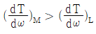
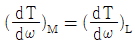
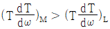
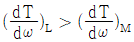
(정답률: 52%)
7. 100[V], 500[W]의 전열기를 90[V]에서 사용할 때의 전력[W]은?
- 4⑤
- 425
- 450
- 500
(정답률: 56%)
8. 터널 다이오드의 용도로 다음 중 가장 널리 사용되는 것은?
- 검파 회로
- 스위칭 회로
- 정류기
- 정전압 소자
(정답률: 73%)
9. 다음 중 휘도의 단위로 사용되는 것은?
- [lx]
- [rlx]
- [cd]
- [sb]
(정답률: 60%)
10. 열차의 자중이 100[t]이고, 동륜상의 중량이 90[t]인 기관차의 최대 견인력(kgf)은? (단, 궤조의 부착계수는 0.2로 한다.)
- 15000
- 16000
- 18000
- 21000
(정답률: 76%)
11. 반사율 10[%], 흡수율 20[%]인 5.6[m2]의 유리면에 광속 1000[lm]인 광원을 균일하게 비추었을 때 그 이면의 광속 발산도 [rlx]는? (단, 전등기구 효율은 90[%]이다.)
- 921.4
- 100.5
- 112.5
- 124.4
(정답률: 47%)
12. 지벡 효과의 역현상으로 동종의 금속의 접점에 전류를 통하면 전류방향에 따라 열을 발생하거나 흡수하는 현상은?
- 표피효과
- 톰슨효과
- 펠티어효과
- 핀치효과
(정답률: 82%)
13. 다음 중 형광체로 쓰이지 않는 것은?
- 텅스텐산 칼슘
- 규산 아연
- 붕산 카드뮴
- 황산 나트륨
(정답률: 64%)
14. 고도가 20[mm]이고 반지름이 800[m]인 곡선 궤도를 주행할 때 열차가 낼 수 있는 최대 속도 (km/h)는 약 얼마인가? (단, 궤간은 1067[mm]이다.)
- 34.94
- 38.94
- 43.64
- 83.64
(정답률: 63%)
15. 기중기로 150[t]의 하중을 2[m/min]의 속도로 권상시킬 때 필요한 전동기의 용량은 약 몇 [kW]인가? (단, 기계효율은 70%이다)
- 50
- 60
- 70
- 80
(정답률: 76%)
16. 완전 확산면의 광속 발산도가 1000[rlx] 일 때, 휘도는 약 몇 [cd/cm2]인가?
- 0.01
- 0.32
- 0.032
- 0.1
(정답률: 63%)
17. PN 접합 다이오드에서 cut-in Voltage란?
- 순방향에서 전류가 현저히 증가하기 시작하는 전압이다.
- 순방향에서 전류가 현저히 감소하기 시작하는 전압이다.
- 역방향에서 전류가 현저히 감소하기 시작하는 전압이다.
- 역방향에서 전류가 현저히 증가하기 시작하는 전압이다.
(정답률: 89%)
18. 저항 발열체의 구비 조건이 아닌 것은?
- 팽창 계수가 클 것
- 적당한 저항값을 가질 것
- 내식성이 클 것
- 내열성이 클 것
(정답률: 70%)
19. 유도 가열은 어떤 원리를 이용한 것인지 다음 중 가장 적당한 것은?
- 줄열
- 철손
- 유전체손
- 아크손
(정답률: 67%)
20. 제어계에서 동작 신호를 만드는 부분을 무엇이라고 하는가?
- 조작부
- 검출부
- 조절부
- 제어부
(정답률: 43%)
2과목: 전력공학
21. 다음 중 배전 계통에서 전력용 콘덴서를 설치하는 목적은?
- 기기의 보호
- 전력 손실의 감소
- 이상전압 방지
- 안정도 향상
(정답률: 26%)
22. 66kV 송전계통에서 3상 단락고정이 발생하였을 경우 고장점에서 본 등가 정상임피던스가 100MVA기준으로 25%라고 하면 고장 피상전력은 몇 [MVA]가 되는가?
- 250
- 300
- 400
- 500
(정답률: 34%)
23. 다음 중 가스차단기 (GCB)의 보호장치가 아닌 것은?
- 가스압력계
- 가스밀도검출계
- 조작압력계
- 가스성분표시계
(정답률: 39%)
24. 지락 고장 시의 이상전압이 최저인 접지 방식은?
- 소호리액터 접지식
- 비접지식
- 고저항접지식
- 직접접지식
(정답률: 47%)
25. 어떤 발전소에서 발열량 5000kcal/kg의 석탄 10ton을 사용하여 20000kWh의 전력을 발생하였을 경우 이 발전소의 열효율은 몇 [%]인가?
- 39.4
- 36.4
- 34.4
- 29.4
(정답률: 34%)
26. 화력발전소에서 급수 및 증기가 흐르는 순서는?
- 절탄기 → 보일러 → 과열기 → 터빈 → 복수기
- 절탄기 → 보일러 → 과열기 → 복수기 → 터빈
- 보일러 → 절탄기 → 과열기 → 터빈 → 복수기
- 보일러 → 과열기 → 절탄기 → 터빈 → 복수기
(정답률: 25%)
27. 수전용 변전설비의 1차측에 설치하는 차단기의 용량은 어느 것에 의하여 정하는가?
- 수전전력과 부하율
- 수전계약용량
- 공급측 전원의 단락용량
- 부하설비용량
(정답률: 44%)
28. 송전선로는 장시간 연속 사용할 경우에 전선 접속 장소의 열화 등을 고려해서 허용 온도를 억제하고 있다. 다음 중 전선의 연속 사용 최고 온도로 가장 적절한 것은?
- 90℃
- 120℃
- 150℃
- 200℃
(정답률: 22%)
29. 보호계전기의 필요한 특성으로 옳지 않은 것은?
- 소비전력이 적고 내구성이 있을 것
- 고장구간의 선택차단을 정확히 행할 것
- 적당한 후비보호능력을 가질 것
- 동작은 느리지만 감도가 확실할 것
(정답률: 28%)
30. 송전계통에 복도체가 사용되는 주된 목적은?
- 전력손실울 경감시키기 위하여
- 역률을 개선시키기 위하여
- 선로정수를 평형시키기 위하여
- 코로나를 방지하기 위하여
(정답률: 35%)
31. 초고압용 차단기에서 개폐저항을 사용하는 이유는?
- 차단전류 감소
- 이상전압 감쇄
- 차단속도 증진
- 차단전류의 역률개선
(정답률: 32%)
32. 배전선에서 균등하게 분포된 부하일 경우 배전선 말단의 전압 강하는 모든 부하가 배전선의 어느 지점에 집중되어 있을 때의 전압 강하와 같은가?
- 1/5
- 2/3
- 1/2
- 1/3
(정답률: 35%)
33. 그림에서 A, B 두 지점의 단면적을 각각 1.2[m2], 0.4[m2]이라 하고 A에서의 유속 V1을 0.3[m/sec]라 할 때 B에서의 유속 V2는 몇 [m/sec]인가?
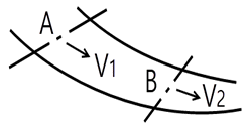
- 0.9
- 1.2
- 3.6
- 4.8
(정답률: 16%)
34. 비접지식 송전선로에서 1선지락 고장이 생겼을 경우 지락점에 흐르는 전류는?
- 직류 전류이다.
- 고장 지점의 영상전압보다 90도 빠른 전류이다.
- 고장 지점의 영상전압보다 90도 늦은 전류이다.
- 고장 지점의 영상전압과 동상의 전류이다.
(정답률: 31%)
35. T형 회로에서 4단자 정수 A는? (단, Z는 선로의 직렬 임피던스, Y는 선로의 병렬어드미턴스이다.)
- Z
- Y
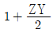
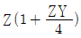
(정답률: 29%)
36. 루프(loop)배전의 이점은?
- 전선이 경제적이다.
- 증설이 쉽다.
- 농촌에 적당하다.
- 전압변동이 적다.
(정답률: 35%)
37. 3상 4선식 고압선로의 보호에 있어서 중성선 다중접지 방식의 특성 중 옳은 것은?
- 합성 접지 저항이 매우 높다.
- 건전상의 전위 상승이 매우 높다.
- 통신선에 유도장해를 줄 우려가 있다.
- 고장 시 고장전류가 매우 작다.
(정답률: 35%)
38. 다음 중 배전 선로의 손실 경감책이 아닌 것은?
- 전류밀도의 감소와 평형
- 전력용콘덴서의 설치
- 배전전압의 승압
- 누전차단기 설치
(정답률: 37%)
39. 송전선로에서 매설지선의 설치 목적은?
- 코로나 전압의 감소
- 뇌해의 방지
- 기계적 강도의 증가
- 절연강도의 증가
(정답률: 32%)
40. 장거리 경간을 갖는 송전선로에서 전선의 단선을 방지하기 위하여 사용하는 전선은?
- 경알루미늄선
- 경동선
- 중공전선
- ACSR
(정답률: 36%)
3과목: 전기기기
41. 동기발전기의 돌발 단락 전류를 제한하는 것은?
- 누설 리액턴스
- 역상 리액턴스
- 권선 저항
- 동기 리액턴스
(정답률: 22%)
42. 2방향성 3단자 사이리스터는?
- SCR
- SSS
- SCS
- TRIAC
(정답률: 25%)
43. 수은 정류기의 전압과 효율과의 관계는?
- 전압과 효율은 전혀 관계없다.
- 전압이 높아짐에 따라 효율이 감소한다.
- 전압이 높아짐에 따라 효율이 좋아진다.
- 어느 전압 이하에서는 전압에 관계없이 일정하다.
(정답률: 27%)
44. 다음 중 3상 직권 정류자 전동기에 있어서 중간 변압기를 사용하는 주된 목적은?
- 역 회전의 방지를 위하여
- 역 회전을 하기 위하여
- 권수비를 바꾸어서 전동기의 특성을 조정하기 위하여
- 분권 특성을 얻기 위하여
(정답률: 37%)
45. 3상 유도 전동기의 원선도를 그리는데 필요하지 않은 시험은?
- 슬립측정
- 구속시험
- 무부하시험
- 저항측정
(정답률: 40%)
46. 1000[kW], 500[V]의 분권 발전기가 있다. 회전수 240[rpm]이며 슬롯수 192, 슬롯내부 도체수 6, 자극수가 12일 때 전부하 시의 자속수[Wb]는 약 얼마인가? (단, 전기자 저항은 0.006[Ω]이고, 단중 중권이다.)
- 1.85
- 0.11
- 0.185
- 0.001
(정답률: 18%)
47. 변압기 권선과 철심의 건조법이 아닌 것은?
- 열풍법
- 단락법
- 반환부하법
- 진공법
(정답률: 23%)
48. 60[Hz] 4극 3상 유도 전동기가 1620[rpm]으로 운전하고 있다. 이 전동기의 슬립은?
- 0.025
- 0.⑤
- 0.075
- 0.1
(정답률: 17%)
49. 200[V] 20[kW], 효율 0.8인 직류 분권 전동기의 전부하 전류[A]는?
- 85
- 100
- 125
- 150
(정답률: 29%)
50. 동기발전기에 사용되는 여자기의 용도는?
- 발전기의 속도를 일정하게 하기 위한 것
- 부하변동을 방지하기 위한 것
- 직류전압을 공급하기 위한 것
- 주파수를 조정하기 위한 것
(정답률: 21%)
51. 부하의 변화에 대하여 속도 변동이 가장 큰 직류 전동기는?
- 분권전동기
- 차동 복권전동기
- 가동 복권전동기
- 직권전동기
(정답률: 40%)
52. 직류기에서 전압 변동률이 (＋)값으로 표시되는 발전기는?
- 과복권 발전기
- 직권 발전기
- 분권 발전기
- 평복권 발전기
(정답률: 7%)
53. 어느 권선형 유도전동기가 동기속도의 50[%]정도로만 회전을 하며 그 이상 속도가 증가하지 않는다. 그 원인에 해당 되는 것은?
- 2차 권선 중 한 선이 단선
- 2차 권선 중 두 선을 바꾸어서 결선
- 2차측에 있는 슬립링이 단락
- 1차 권선 중 두 선을 바꾸어서 결선
(정답률: 16%)
54. 정격출력 10000[kVA], 정격전압 6600[V], 동기 임피던스가 매상 3.6[Ω]인 3상 동기 발전기의 단락비는 약 얼마인가?
- 1.40
- 1.35
- 1.21
- 1.15
(정답률: 12%)
55. 단상변압기의 병렬 운전 조건 중 옳지 않은 것은?
- 권수비와 1, 2차의 정격전압이 같을 것
- 권선의 저항과 누설 리액턴스의 비가 같을 것
- %저항 강하 및 리액턴스 강하가 같을 것
- 출력이 같을 것
(정답률: 20%)
56. 변압비 30 : 1의 단상변압기 3대를 1차 △, 2차 Y로 결선하고, 1차에 선간전압 3300[V]를 가했을 때 무부하 2차 선간 전압[V]은 약 얼마인가?
- 250
- 220
- 210
- 190
(정답률: 19%)
57. 포화하고 있지 않은 직류 발전기의 회전수가 1/2로 감소되었을 때 기전력을 전과 같은 값으로 하자면 여자를 속도 변화 전에 비해 얼마로 해야 하는가?
- 1/2배
- 1배
- 2배
- 4배
(정답률: 20%)
58. 3상 권선형 유도전동기의 2차 회로에 저항을 삽입하는 목적이 아닌 것은?
- 속도는 줄지만 최대 토크를 크게하기 위하여
- 속도제어를 하기 위하여
- 기동 토크를 크게하기 위하여
- 기동 전류를 줄이기 위하여
(정답률: 27%)
59. 단상 유도전동기 중 기동토크가 가장 작은 것은?
- 세이팅 코일형
- 콘덴서 기동형
- 반발 기동형
- 분상 기동형
(정답률: 36%)
60. 사용시간이 짧을수록 변압기의 전일 효율을 좋게 하기 위해서 Pi(철손)와 Pc(전부하등손)의 관계로 옳은 것은?
- Pi ＞ Pc
- Pi ＜ Pc
- Pi ＝ Pc
- 무관계
(정답률: 7%)
4과목: 회로이론
61. 전류의 대칭분을 I0, I1, I2 유기기전력 및 단자 전압의 대칭분을 Ea, Eb, Ec 및 V0, V1, V2라 할 때 교류 발전기의 기본식 중 역상분 V2의 값은? (단, 임피던스의 대칭분은 Z0, Z1, Z2라 한다.)
- -Z0I0
- -Z2I2
- Ea –Z1I1
- Eb -Z2I2
(정답률: 15%)
62. 주기적인 구형파의 신호는 그 성분이 어떻게 되는가?
- 교류합성을 갖지 않는다.
- 직류분만으로 합성된다.
- 무수히 않은 주파수의 합성이다.
- 성분분석이 불가능하다.
(정답률: 20%)
63. 저항 R1, R2 및 인덕턴스 L이 직렬로 접속된 회로가 있다. 이 회로에 전압을 갑자기 인가 할 때 흐르는 전류의 시정수는?
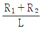
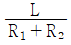
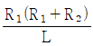
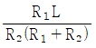
(정답률: 31%)
64. 그림과 같은 단위 계단 함수는?
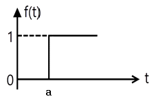
- u(t)
- u(t-a)
- u(a-t)
- -u(t-a)
(정답률: 37%)
65. 회로에서 전압비 전달함수
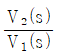
를 구하면?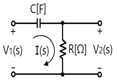
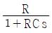
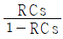
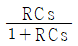
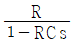
(정답률: 30%)
66. 인덕턴스 L인 코일에 전류 i＝lm sin ωt[A] 가 흐르고 있다. L에 축적된 에너지의 첨두(Peak) 값은?
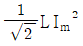
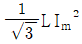
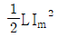
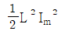
(정답률: 47%)
67. 그림과 같은 파형을 갖는 맥류전류의 평균치가 10[A]이라면 전류의 실효치[A]는 약 얼마인가?
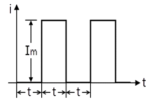
- 10
- 14
- 20
- 28
(정답률: 19%)
68. 3상 회로의 선간 전압이 각각 80[V], 50[V], 50[V]일 때의 전압의 불평형률[%]은?
- 39.6
- 57.3
- 73.6
- 86.7
(정답률: 14%)
69. 5[㎌]와 3[㎌]의 콘덴서 2개를 직렬로 연결하였을 때와 병렬로 연결하였을 때의 합성용량을 각각 CS 및 CP라 하면 CP/CS는?
- 약 8
- 약 1.9
- 약 4.3
- 약 15
(정답률: 29%)
70. 그림과 같은 T형 회로에서 4단자 정수가 아닌 것은?
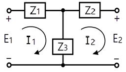
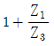
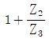
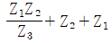
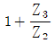
(정답률: 25%)
71. R.L.C 병렬 공진회로에 관한 설명 중 옳지 않은 것은?
- 공진 시 입력 어드미턴스는 매우 작아진다.
- 공진 주파수 이하에서의 입력전류는 전압보다 위상이 뒤진다.
- R이 작을수록 Q가 높다.
- 공진 시 L 또는 C를 흐르는 전류는 입력전류 크기의 Q배가 된다.
(정답률: 24%)
72. 그림과 같이 고주파 브리지를 가지고 상호 인덕턴스를 측정 하고자 한다. 그림 (a)와 같이 접속하면 합성자기인덕턴스는 30[mH]이고, (b)와 같이 접속하면 14[mH]이다. 상호 인덕턴스[mH]는?
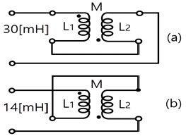
- 2
- 4
- 8
- 16
(정답률: 25%)
73. f(t)＝5sin2t를 라플라스 변환하면?
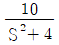
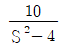
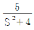
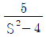
(정답률: 27%)
74. 어느 소자에 전압 e＝125 sin 377t[V]를 가하니 전류 i＝50 cos 377t[A]가 흘렀다. 이 회로의 소자는?
- 순저항
- 저항과 유도 리액턴스
- 용량 리액턴스
- 유도 리액턴스
(정답률: 30%)
75.
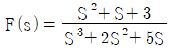
일 때 f(t)의 초기값은 얼마인가?- 1
- 2
- 3
- 5
(정답률: 22%)
76. 그림과 같은 순저항만의 회로에 3상전압을 가했을 때 각 선에 흐르는 전류가 같게 될 때 R의 값은 몇 [Ω]인가?
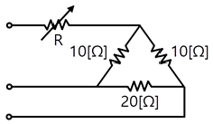
- 2.5
- 5
- 7.5
- 10
(정답률: 20%)
77. 코일에 100[V]의 교류전압을 가하니 10[A]의 전류가 흘렀고, 전압과 전류의 위상차는 π/3 [rad]가 되었다. 이 코일의 저항[Q] 값은?
- 15
- 12
- 8
- 5
(정답률: 20%)
78. 회로의 영상 임피던스 Z01과 Z02의 값[Ω]은 ?
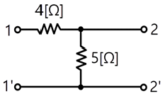
- Z01＝9, Z02＝5
- Z01＝4, Z02＝5
- Z01＝6, Z02＝10/3
- Z01＝5, Z02＝11/3
(정답률: 23%)
79. 그림과 같이 주파수 f[Hz]인 교류회로에 있어서 전류 I와 IR이 같은 값으로 되는 조건은? (단, R은 저항[Ω], C는 정전용량[F], L은 인덕턴스[H]이다.)
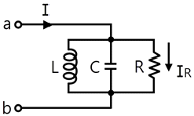
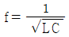
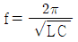
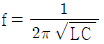
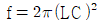
(정답률: 40%)
80. 이상 변압기에 대한 설명 중 옳은 것은?
- 단자전압의 비 V2/V1는 코일의 권수비와 같다.
- 단자전류의 비 I2/I1는 권수비와 같다.
- 1차 단자에서 본 전체 임피던스는 부하 임피던스에 권수비의 자승의 역수를 곱한 것과 같다.
- 1차측의 복소전력은 2차측 부하의 복소전력과 같다.
(정답률: 18%)
5과목: 전기설비
81. 조명용 백열전등을 설치할 때 일반주택 및 아파트 각 호실의 현관등은 몇 분 이내에 소등되는 타임스위치를 시설하여야 하는가?
- 1
- 2
- 3
- 4
(정답률: 45%)
82. 저압 가공전선로의 지지물에 시설하는 통신선 또는 이에 직접 접속하는 가공 통신선을 횡단보도교의 위에 시설하는 경우에는 노면상 몇 [m] 이상의 높이로 시설 하여야 하는가? (단, 통신선은 절연전선과 동등 이상의 절연효력이 있는 것이라고 한다.)
- 3.0
- 3.5
- 4.0
- 5.0
(정답률: 10%)
83. 합성수지관공사 시에 관의 지지점 간의 거리는 몇 [m] 이하로 하여야 하는가?
- 1.0
- 1.5
- 2.0
- 2.5
(정답률: 18%)
84. 사용전압이 400V 미만인 경우의 저압 보안공사에 전선으로 경동선을 사용할 경우 지름은 몇 [㎜] 이상의 것이어야 하는가?
- 2.6
- 3.5
- 4.0
- 5.0
(정답률: 23%)
85. 애자사용공사에 의한 고압옥내배선을 할 때 전선을 조영재의 면을 따라 붙이는 경우, 전선의 지지점 간의 거리는 몇 [m] 이하이어야 하는가?
- 2
- 3
- 4
- 5
(정답률: 30%)
86. 다음 중 옥내의 네온 방전등 공사의 방법으로 옳은 것은?
- 방전등용 변압기는 누설변압기일 것
- 관등회로의 배선은 점검할 수 없는 은폐된 장소에 시설 할 것
- 관등회로의 배선은 애자사용공사에 의할 것
- 전선의 지지점 간의 거리는 2m 이하로 할 것
(정답률: 10%)
87. 전기설비기술기준의 판단기준의 용어의 정의에서 "제2차 접근상태"란 무엇인가?
- 가공 전선이 전선의 절단 또는 지지물의 도괴 등이 되는 경우에 당해 전선이 다른 시설물에 접속될 우려가 있는 상태를 말한다.
- 가공 전선이 다른 시설물과 접근하는 경우에 그 가공 전선이 다른 시설물의 위쪽 또는 옆쪽에서 수평거리로 3m 미만인 곳에 시설되는 상태를 말한다.
- 가공 전선이 다른 시설물과 접근하는 경우에 그 가공 전선이 다른 시설물의 위쪽 또는 옆쪽에서 수평거리로 3m 이상에 시설되는 것을 말한다.
- 가공 전선로 중 제1차 접근시설로 접근할 수 없는 시설로서 제2차 보호조치나 안전시설을 하여야 접근할 수 있는 상태의 시설을 말한다.
(정답률: 17%)
88. 중성선 다중접지식의 것으로 전로에 지락이 생겼을 때에 2초 이내에 자동적으로 이를 전로로부터 차단하는 장치가 되어 있는 22.9kV 가공전선로를 상부 조영재의 위쪽에서 접근상태로 시설하는 경우, 가공전선과 건조물과의 이격거리는 몇 [m] 이상이어야 하는가? (단, 전선으로는 나전선을 사용한다고 한다.)
- 1.2
- 1.5
- 2.5
- 3.0
(정답률: 15%)
89. 강색철도의 전차선을 시설할 때, 강색 차선은 지름이 몇 [㎜] 이상의 경동선 또는 이와 동등 이상의 세기 및 굵기의 것이어야 하는가?
- 4
- 7
- 10
- 12
(정답률: 12%)
90. 고압 보안공사 시에 지지물로 A종 철근콘크리트주를 사용할 경우 경간은 몇 [m] 이하이어야 하는가?
- 50
- 100
- 150
- 400
(정답률: 33%)
91. 가공 전선로에 사용하는 지지물의 강도 계산에 적용하는 풍압하중 중 병종풍압하중은 갑종풍압하중에 대한 얼마의 풍압을 기초로 하여 계산한 것인가?
- 1/2
- 1/3
- 2/3
- 1/4
(정답률: 33%)
92. 중량물이 통과하는 장소에 비닐외장케이블을 직접 매설식으로 시설하는 경우, 매설깊이는 몇 [m] 이상이어야 하는가?
- 0.8
- 1.0
- 1.2
- 1.5
(정답률: 36%)
93. 특별 제3종접지공사를 시행하여야 할 저압전로에 지락이 생긴 경우 정격감도전류가 300mA이고 0.5초 이내에 자동적으로 전로를 차단하는 장치를 시설한다면 이 전로의 접지 저항은 몇 [Ω] 이하로 하여야 하는가? (단, 물기 있는 장소인 경우이다.)
- 30
- 50
- 100
- 150
(정답률: 9%)
94. 사용전압이 440V인 저압 옥내배선의 사용전선으로 미네럴 인슈레이션케이블을 사용한다면 단면적은 몇 [mm2] 이상 이어야 하는가?
- 1.0
- 2.0
- 3.0
- 4.0
(정답률: 25%)
95. 수소냉각식의 발전기안 또는 조상기안의 수소의 순도가 몇 [%] 이하로 저하한 경우에 이를 경보하는 장치를 시설하여야 하는가?
- 70
- 75
- 80
- 85
(정답률: 32%)
96. 동일 지지물에 저압가공전선(다중접지된 중성선은 제외)과 고압가공전선을 동일 지지물에 시설하는 경우 저압 가공전선은?
- 고압 가공전선의 위로 하고 동일 완금류에 시설
- 고압 가공전선과 나란하게 하고 동일 완금류에 시설
- 고압 가공전선의 아래로 하고 별개의 완금류에 시설
- 고압 가공전선과 나란하게 하고 별개의 완금류에 시설
(정답률: 52%)
97. 목외용 비닐절연전선을 사용한 저압가공전선이 횡단보도교의 위에 시설되는 경우에 그 전선의 노면상 높이는 몇 [m] 이상으로 하여야 하는가?
- 2.5
- 3.0
- 3.5
- 4.0
(정답률: 15%)
98. 전기온상용 발열선은 그 온도가 몇 [℃] 를 넘지 않도록 시설하여야 하는가?
- 50
- 60
- 80
- 100
(정답률: 35%)
99. 변압기의 안정권선이나 유휴권선 또는 전압조정기의 내장 권선을 이상전압으로부터 보호하기 위하여 특히 필요할 경우, 그 권선에 접지공사를 할 때에는 몇 종 접지공사를 하여야 하는가?
- 제1종 접지공사
- 제2종 접지공사
- 제3종 접지공사
- 특별제3종 접지공사
(정답률: 22%)
100. 다음 중 200V 전로에 시설되는 전동기의 금속제 외함의 접지공사로 알맞은 것은?
- 제1종 접지공사
- 제2종 접지공사
- 제3종 접지공사
- 특별 제3종 접지공사
(정답률: 48%)